UE kareleri
Erdem'in U5'in a4_two_pm TR karesine yaptığı üç not için önce/sonra kareleri. Hiçbir şey commit'lenmedi: kareler U6'nın
(d1eb210) bir kopyasında, değişiklikler bir ortam değişkeninin (UE) arkasında çekildi; "önce" kareleri aynı ağaçtan, değişken
boşken. Pencere 1920×1080. Kırpmalara tıklayınca tam kare açılır. Seçimi Erdem yapar; yardımcı yönetmenin önerisi her bölümde yazılı.
1. Sol sütun daralsın, sprint kutusu genişlesin
İstek: eksendeki aşama kutuları (7 · 9 · 4 gibi) sıkışık okunuyor; sol sütun (müşteri talepleri ve modüller) daralsın, kazanılan genişlik zaman eksenine geçsin. Kart bilgi sütunu (312 px) ve sağ sütun (300 px) değişmedi.
| Önce | Sonra | |
|---|---|---|
| Sol sütun | 288 px | 280 px |
| Sprint sütunu (orta) | 754 px | 762 px |
| Zaman ekseni | 396 px | 404 px |
| Eksende bir hafta | 152,3 px | 155,4 px (+3,1) |
Bulgu: sol sütun 280 px'in altına inemiyor. Sınırı talep satırı koyuyor: en uzun müşteri adı ("Sultanahmet Gayrimenkul") ve yanındaki son tarih çipi. 268 px'in altında sözcük ortadan kırılıyor; 264 px'te "Entegrasyonlar düzeltmesi" üç satıra iniyor. Bu yüzden yalnız sol sütunu daraltmak eksende bir haftaya en çok 3–9 px kazandırıyor; aşağıdaki iki kare gözle neredeyse aynı. Eksende hissedilir bir genişlik ancak kart bilgi sütunundan (312 px) ya da sağ sütundan (300 px) alınabilir; bu kopyada sınanmadı.
a4_two_pm, uzun adlar: TR

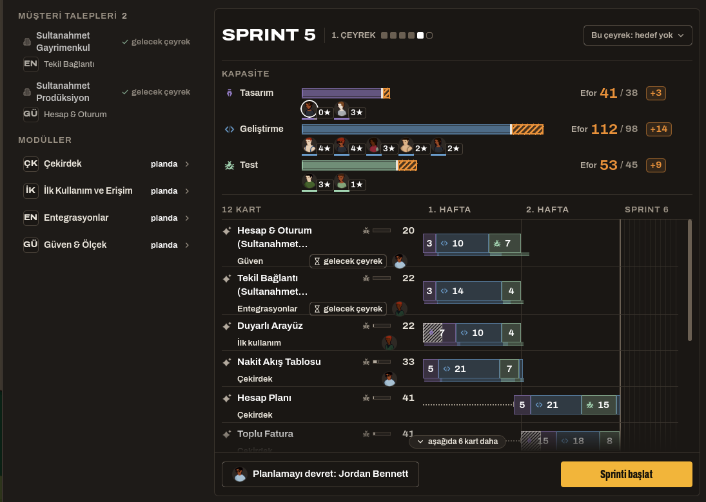

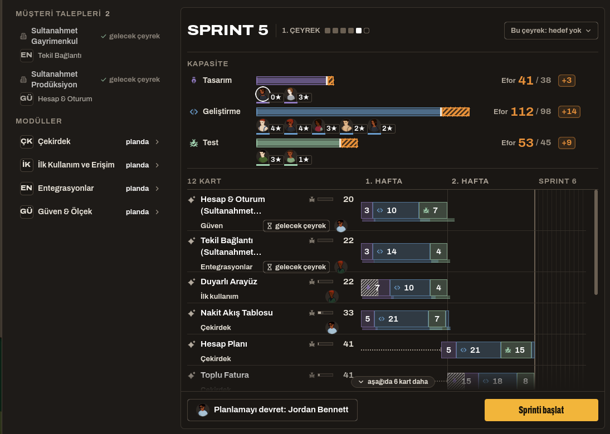
a4_two_pm, uzun adlar: EN

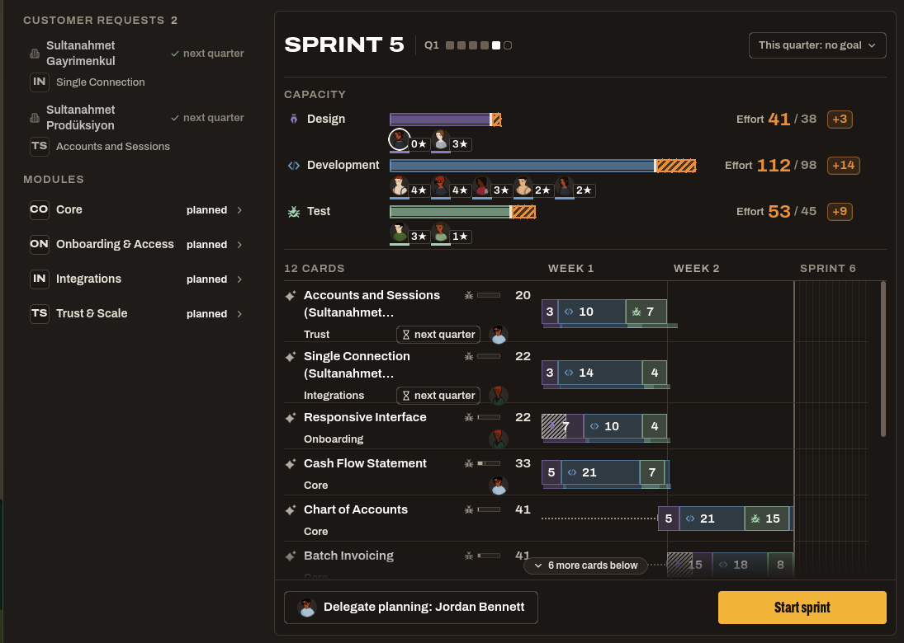

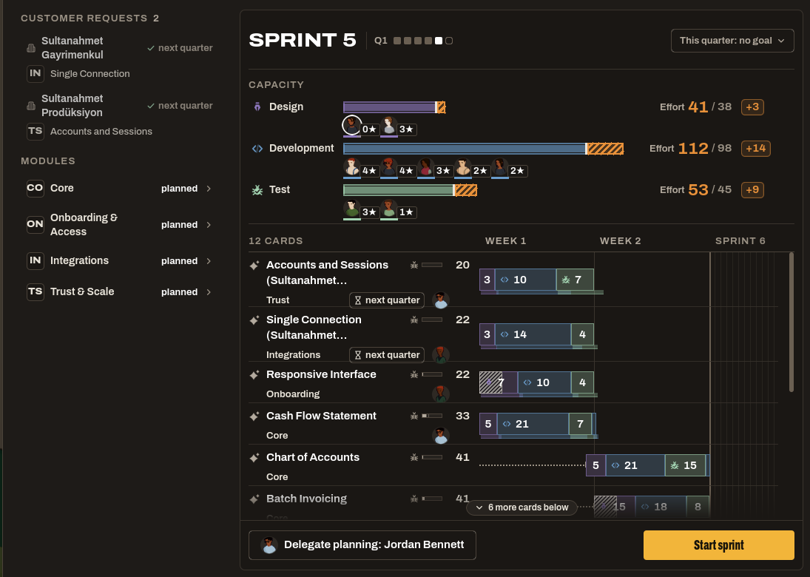
a4_fifty (50 kişi, planlama PM'de), uzun adlar: TR

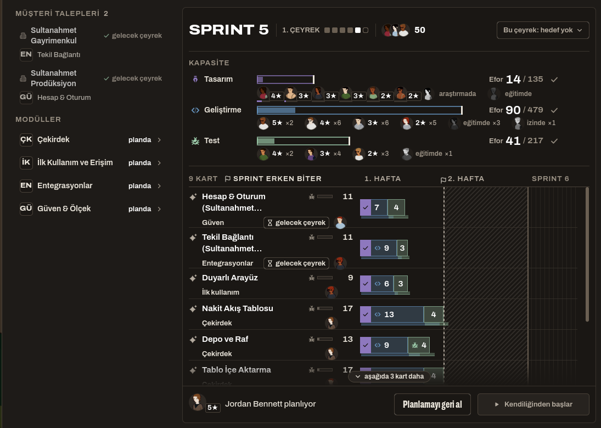

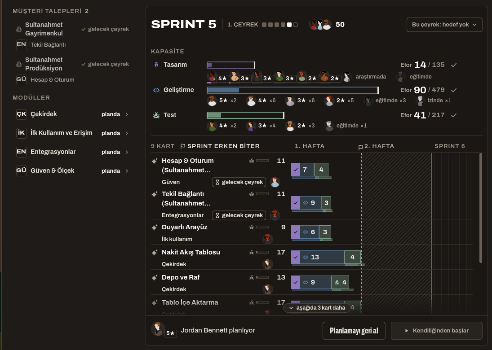
a4_fifty, uzun adlar: EN

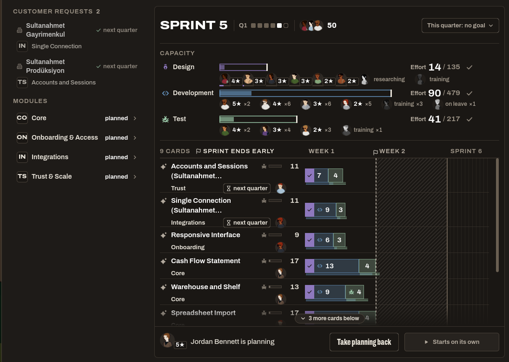

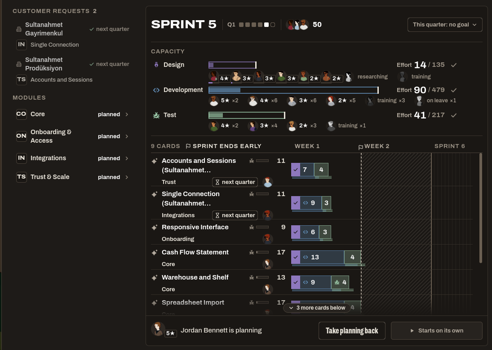
Ayrıca: uzun kart adları panoda iki satırdan sonra "…" ile kesiliyor ("Hesap & Oturum (Sultanahmet…"). Bu iki kipte de, U6'nın kendisinde de var. "Ad kesilmez" kuralına (N4) aykırı; U7'nin işine yazıldı.
2. Modül kısaltmaları yerine ikon
İkonlar oyunun kendi ikon setinden, kart tür ikonlarıyla aynı aileden (24 px, düz dolgulu). Yeni ikon çizilmedi, set dışından ikon alınmadı. Talep ve modül satırında aynı 24 px kutuda 16 px çizilir; üstüne gelince modülün adı yazar. Panoda modül adı zaten kelime olarak yazdığı için orada ikon yok.
| Modül | Bugün | İkon dosyası | Neden |
|---|---|---|---|
| Çekirdek | ÇK | rail/product.svg | Küp: ürünün kendisi. Aynı ikon sol menüde "Ürün" sekmesinde de var. |
| İlk Kullanım ve Erişim | İK | world/training.svg | Mezuniyet şapkası: ürünü öğrenmek. "Erişim" yarısının ikonu yok. |
| Entegrasyonlar (B2B) | EN | dept/development.svg | Komut satırı: API. Yaklaşık; sette fiş ya da bağlantı ikonu yok. |
| Güven & Ölçek | GÜ | util/shield.svg | Kalkan: güvenlik ve dayanıklılık hatları. |
| Büyüme (B2C) | BÜ | stake/cash_in.svg | Daire içinde yukarı ok. Yaklaşık; sette kitle ya da büyüme ikonu yok. |
| Gelir (B2C) | GE | skill/sales.svg | Fiyat etiketi: Gelir'in tek yeteneği ücretli plan. |

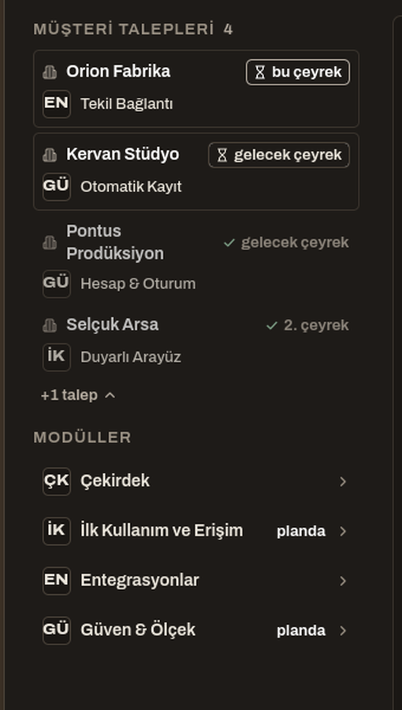

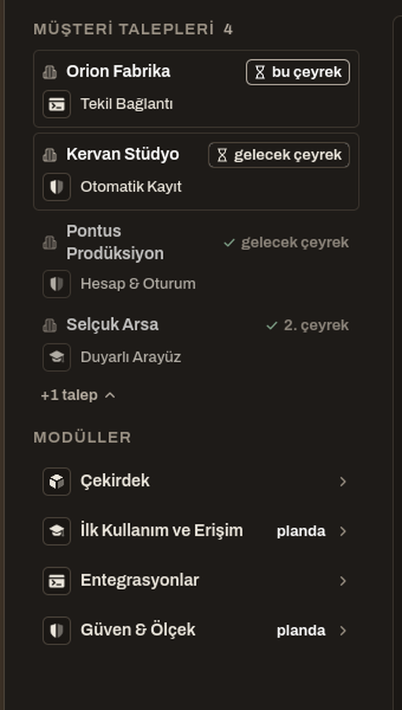

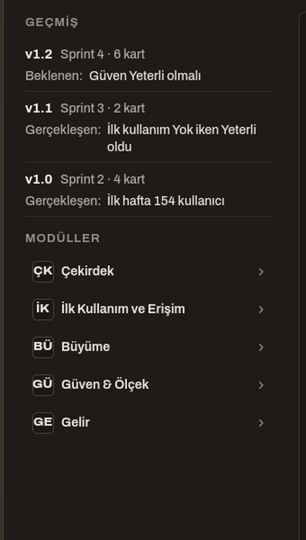

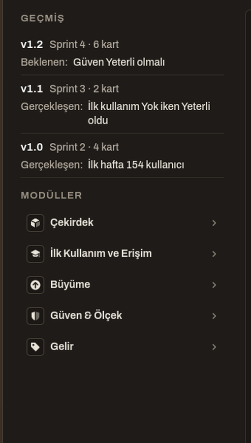
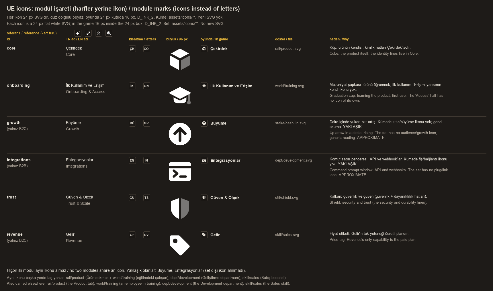
3. "planda" ve "gelecek çeyrek": hiyerarşi (N2)
A4'te Erdem bu yazıların küçük durmasının kötü göründüğünü söylemişti; U5'te hâlâ küçük, küçük harfli ve soluktular.
- (a) Durum metni satır adıyla aynı boyda ve cümle başı büyük: "Planda", "Bu çeyrek", "Gelecek çeyrek". Üç yeni metin anahtarı gerekir.
- (b) Modül satırında "planda" yazısı kalkar, yerine yeşil bir tik durur (üstüne gelince "Bu sprintte kartı var"). Talebin son tarihi ad boyunda, büyük harfle başlayan bir çip olur. (a) ile tek farkı modül satırındaki tik.
Yardımcı yönetmenin önerisi: (b). Durum yazıyla değil biçimle okunur, açıklaması ipucundadır.

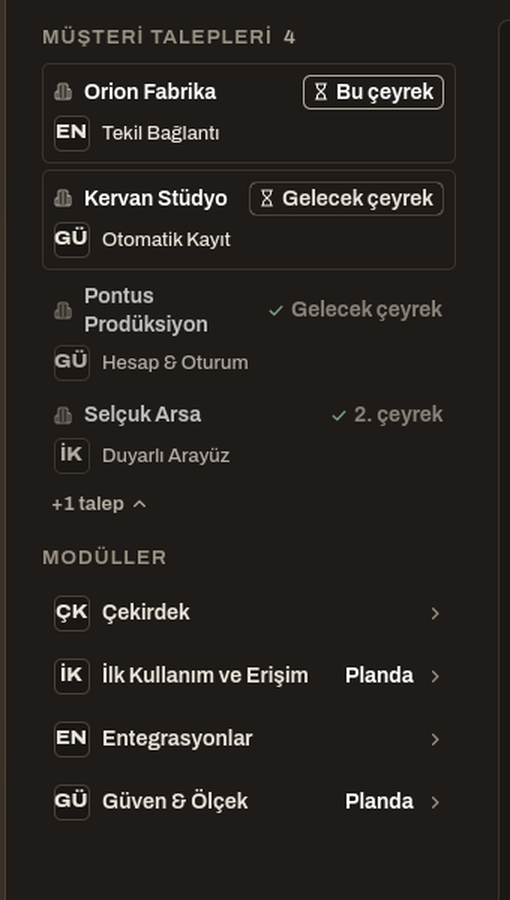

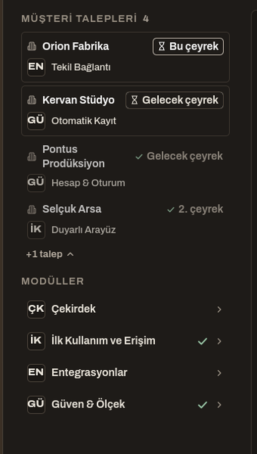
Not: kartı bu sprintin planında olan talep satırları (Pontus, Selçuk) iki seçenekte de soluk kalıyor, çünkü bütün satır yarı saydam çiziliyor (U2'nin "planlı talep" kuralı). Soluk görünmeleri isteniyorsa ayrıca karar gerekir.
Kaynak
- Prototip görevi: prototip_gorevi.md; kodlayıcının ölçüm raporu: prototip_raporu.md.
- Kopya bu makinede (scratchpad
wue); dizüstünde U6 commit'i ve görev metninden yeniden kurulur. - "Bekliyor: ürün yöneticisi ya da kurucu" ipucu (B2) bu turda değişmedi.